SpaPheno Tutorial: Linking Spatial Transcriptomics to Clinical Phenotypes with Interpretable Machine Learning
Bin Duan
SJTUbinduan@sjtu.edu.cn
2025-08-09
Source:vignettes/SpaPheno-tutorial.Rmd
SpaPheno-tutorial.RmdIntroduction
Linking spatial transcriptomic patterns to clinically relevant phenotypes is a critical step toward spatially informed precision oncology. Here, we introduce SpaPheno, an interpretable machine learning framework that integrates spatial transcriptomics with clinically annotated bulk RNA-seq data to uncover spatially resolved biomarkers predictive of patient outcomes. Leveraging Elastic Net regression combined with SHAP-based attribution, SpaPheno uniquely identifies spatial features at multiple scales—from tissue regions to specific cell types and individual spatial spots—that are associated with patient survival, tumor stage, and immunotherapy response. We demonstrate the robustness and generalizability of SpaPheno through comprehensive simulations and applications spanning primary liver cancer, clear cell renal cell carcinoma, breast cancer, and melanoma. Across these diverse settings, SpaPheno achieves high predictive accuracy while providing biologically meaningful and spatially precise interpretations. Our framework offers a powerful and extensible approach for translating complex spatial omics data into actionable clinical insights, accelerating the development of precision oncology strategies grounded in tumor spatial architecture.
SpaPheno is an R package designed to identify, visualize, and interpret spatial phenotype associations from spatial transcriptomics and simulated bulk data. Here are Key Features:
Integration of spatial transcriptomics with clinically annotated bulk RNA-seq data
Multi-scale interpretable machine learning framework
Robust applicability across diverse cancer types and clinical endpoints

The Overview of SpaPheno
Installation
To get started with SpaPheno, ensure that you have the required dependencies installed. The package relies on a set of CRAN and Bioconductor packages such as glmnet, FNN, and survival. You can install them via BiocManager if not already available.
Next, install SpaPheno directly from GitHub using devtools. This will fetch the latest development version maintained by the authors.
Once installed, load the core packages used throughout the SpaPheno workflow, including ggplot2 for visualization and tidyverse for data handling.
if (!require("BiocManager", quietly = TRUE)) {
install.packages("BiocManager")
}
## Install suggested packages
# BiocManager::install(c(
# "glmnet",
# "FNN",
# "survival"
# ))
# install.packages("devtools")
# devtools::install_github("bm2-lab/SpaDo")
# SpaPheno installation
# devtools::install_github("Duan-Lab1/SpaPheno", dependencies = c("Depends", "Imports", "LinkingTo"))
library(SpaPheno)
library(tidyverse)
library(ggplot2)
library(reshape2)
library(stringr)
library(survival)Data availability
The data required for the test are all listed in the following google cloud directory SpaPheno Demo Data.
├── BRCAsurvival.RData
├── HCC_stage.RData
├── HCC_survival.RData
├── KIRC_survival.RData
├── Melanoma_ICB.RData
├── Simulation_osmFISH.RData
└── Simulation_STARmap.RDataSimulation osmFISH
This tutorial demonstrates the workflow of SpaPheno using simulated osmFISH data, including:
- Loading and visualizing spatial cell annotations.
- Defining simulated phenotypes across spatial regions.
- Generating pseudo-bulk samples for phenotype modeling.
- Building a logistic regression model via automated regularization selection.
- Performing spatial phenotype risk prediction.
- Interpreting key contributing cell types using SHAP values.
- Exploring spatial patterns of model residuals for biological insight.
Together, this pipeline allows researchers to integrate spatial structure, cell composition, and predictive modeling to understand how local cell-type environments contribute to complex phenotypes.
load data
rm(list = ls())
load(system.file("extdata", "Simulation_osmFISH.RData", package = "SpaPheno"))
ggplot(test_coordinate, aes(x = X, y = Y, color = sample_information_cellType)) +
geom_point(size = 1)
ggplot(test_coordinate, aes(x = X, y = Y, color = sample_information_region)) +
geom_point(size = 1)Ground truth of simulated phenotypes
custom_colors <- c("red", "lightgray", "blue")
names(custom_colors) <- c(phenotype_simu[2], "Background", phenotype_simu[1])
sample_information_region_choose[!sample_information_region_choose %in% phenotype_simu] <- "Background"
Ground_truth <- factor(sample_information_region_choose[row.names(test_coordinate)], levels = c(phenotype_simu[1], "Background", phenotype_simu[2]))
ggplot(test_coordinate, aes(x = X, y = Y, color = Ground_truth)) +
geom_point(size = 1) +
scale_color_manual(values = custom_colors)Simulating bulk data with phenotypes
pseudo_bulk_simi <- generate_simulated_bulk_data(
input_data = sample_information_cellType,
region_labels = sample_information_region,
phenotypes = phenotype_simu,
perturbation_percent = 0.1,
num_samples = 50,
mode = "proportion")
pseudo_bulk_df1 <- pseudo_bulk_simi[[1]]
pseudo_bulk_df2 <- pseudo_bulk_simi[[2]]
bulk_decon <- t(as.matrix(cbind(pseudo_bulk_df1, pseudo_bulk_df2)))
bulk_pheno <- rep(c(0, 1), each = 50)
names(bulk_pheno) <- c(colnames(pseudo_bulk_df1), colnames(pseudo_bulk_df2))
family <- "binomial"Obtaining prediction results
PhenoResult <- SpatialPhenoMap(
bulk_decon = bulk_decon,
bulk_pheno = bulk_pheno,
family = family,
coord = test_coordinate,
resolution = "single_cell",
sample_information_cellType = sample_information_cellType,
n_perm = 1,
p = 0.001)SHAP analysis
pred_result <- PhenoResult$pred_score
phenoPlus <- row.names(pred_result[pred_result$label %in% "phenotype+", ])
model <- PhenoResult$model
X <- as.data.frame(PhenoResult$cell_type_distribution[phenoPlus, ])
## This step took a very long time
# shap_test_plus <- compute_shap_spatial(
# model = model,
# X_bulk = as.data.frame(bulk_decon),
# y_bulk = bulk_pheno,
# X_spatial = X)
head(shap_test_plus)## feature phi phi.var feature.value sample
## 1 Astrocyte.Gfap 0.0000000000 0.000000e+00 0.08 cell_5682
## 2 Astrocyte.Mfge8 0.0000000000 0.000000e+00 0.04 cell_5682
## 3 C..Plexus -0.0134631352 4.616196e-03 0.02 cell_5682
## 4 Endothelial 0.0000000000 0.000000e+00 0.06 cell_5682
## 5 Endothelial.1 0.0002035102 1.812159e-05 0.02 cell_5682
## 6 Ependymal 0.0000000000 0.000000e+00 0.00 cell_5682SHAP summary plot
SpaPheno_SHAP_summary_plot(shap_test_plus, top_n = 31)SHAP residual analysis
resi_result <- SpaPheno_SHAP_residual_analysis(
shap_df = shap_test_plus,
feature_name = "Perivascular.Macrophages",
coordinate_df = test_coordinate, size = 0.8
)
resi_hot <- resi_result$residual_table
head(resi_hot[order(abs(resi_hot$phi_resid_z), decreasing = T), ], 5)## feature phi phi.var feature.value sample
## 420 Perivascular.Macrophages 0.3887959 0.2184542 0.06 cell_5612
## 483 Perivascular.Macrophages -0.2546234 0.1502212 0.00 cell_4530
## 493 Perivascular.Macrophages -0.2535509 0.1451300 0.00 cell_4650
## 457 Perivascular.Macrophages 0.5548111 0.2055735 0.12 cell_5593
## 39 Perivascular.Macrophages 0.3240469 0.1976987 0.04 cell_5790
## phi_residual phi_resid_z resid_group color_group
## 420 0.2360473 2.642347 High residual High
## 483 -0.2356644 -2.638060 Low residual Low
## 493 -0.2345918 -2.626054 Low residual Low
## 457 0.2303550 2.578626 High residual High
## 39 0.2285343 2.558245 High residual High
SpaPheno_SHAP_waterfall_plot(shap_test_plus, "cell_5593", top_n = 10)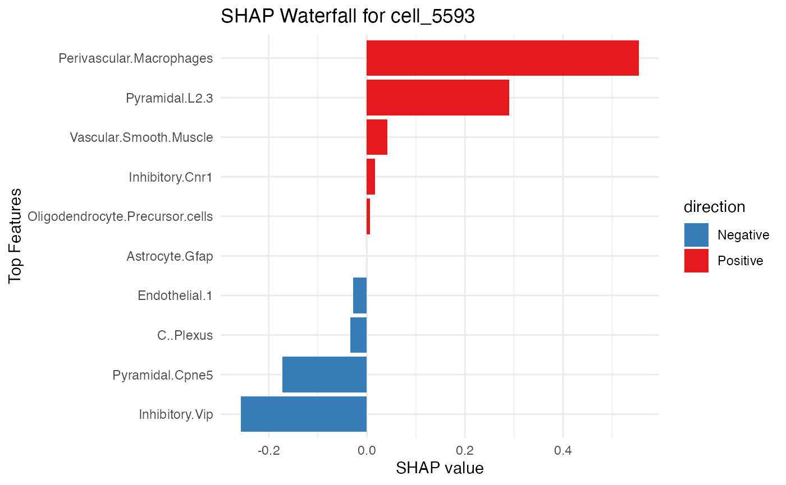
resi_result$dependence_plot
resi_result$spatial_plotSimulation STARmap
load data
rm(list = ls())
load(system.file("extdata", "Simulation_STARmap.RData", package = "SpaPheno"))
ggplot(test_coordinate, aes(x = X, y = Y, color = sample_information_cellType)) +
geom_point()
ggplot(test_coordinate, aes(x = X, y = Y, color = sample_information_region)) +
geom_point()Ground truth of simulated phenotypes
custom_colors <- c("red", "lightgray", "blue")
names(custom_colors) <- c(phenotype_simu[2], "Background", phenotype_simu[1])
sample_information_region_choose[!sample_information_region_choose %in% phenotype_simu] <- "Background"
Ground_truth <- factor(sample_information_region_choose[row.names(test_coordinate)],
levels = c(phenotype_simu[1], "Background", phenotype_simu[2]))
ggplot(test_coordinate, aes(x = X, y = Y, color = Ground_truth)) +
geom_point(size = 1) +
scale_color_manual(values = custom_colors)Obtain simulated data with phenotypes
pseudo_bulk_simi <- generate_simulated_bulk_data(
input_data = sample_information_cellType,
region_labels = sample_information_region,
phenotypes = phenotype_simu,
perturbation_percent = 0.1,
num_samples = 50,
mode = "proportion")
pseudo_bulk_df1 <- pseudo_bulk_simi[[1]]
pseudo_bulk_df2 <- pseudo_bulk_simi[[2]]
bulk_decon <- as.matrix(cbind(pseudo_bulk_df1, pseudo_bulk_df2))
bulk_decon <- t(apply(bulk_decon, 2, function(x) {
x / sum(x)
}))
bulk_pheno <- rep(c(0, 1), each = 50)
names(bulk_pheno) <- c(colnames(pseudo_bulk_df1), colnames(pseudo_bulk_df2))
family <- "binomial"Obtain prediction results
PhenoResult <- SpatialPhenoMap(
bulk_decon = bulk_decon,
bulk_pheno = bulk_pheno,
family = family,
coord = test_coordinate,
resolution = "single_cell",
sample_information_cellType = sample_information_cellType,
n_perm = 1,
p = 0.001
)Survival HCC
load demo data
rm(list = ls())
load(system.file("extdata", "HCC_survival.RData", package = "SpaPheno"))
### TLS label
ggplot(test_coordinate, aes(x = X, y = Y, color = sample_information_region)) +
geom_point(size = 1.5) +
scale_color_manual(
values = c(
"TLS" = "#007ACC",
"nonTLS" = "lightgray"
),
name = "Region Type",
labels = c("Non-TLS", "TLS")
)
Obtain prediction results
PhenoResult <- SpatialPhenoMap(
bulk_decon = bulk_decon,
bulk_pheno = bulk_pheno,
family = "cox",
coord = test_coordinate,
resolution = "spot",
sample_information_decon = ST_decon,
size = 1.5,
n_perm = 1,
p = 0.001,
r = 4
)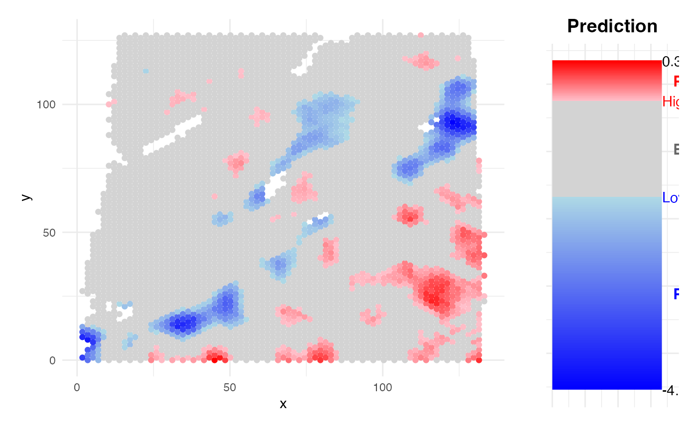
SHAP analysis
pred_result <- PhenoResult$pred_score
phenoPlus <- row.names(pred_result[pred_result$label %in% "phenotype+", ])
phenoMinus <- row.names(pred_result[pred_result$label %in% "phenotype-", ])
model <- PhenoResult$model
X <- PhenoResult$cell_type_distribution[phenoMinus, ]
shap_test <- compute_shap_spatial(model, bulk_decon, bulk_pheno, X)
head(shap_test)## feature phi phi.var feature.value sample
## 1 Bio.potent 0.0005838659 1.551781e-05 0.105472520 AAACAAGTATCTCCCA-1
## 2 CAF -0.0435152693 1.767573e-03 0.119948046 AAACAAGTATCTCCCA-1
## 3 CCL3L1.Macrophage 0.0000000000 0.000000e+00 0.005836406 AAACAAGTATCTCCCA-1
## 4 CD8..MAIT -0.0197043006 3.004776e-04 0.009533719 AAACAAGTATCTCCCA-1
## 5 CD8..Trm -0.0520022782 2.085855e-03 0.008196035 AAACAAGTATCTCCCA-1
## 6 CD16.NK 0.0500187685 3.619665e-03 0.006682971 AAACAAGTATCTCCCA-1
SpaPheno_SHAP_summary_plot(shap_test, top_n = 10)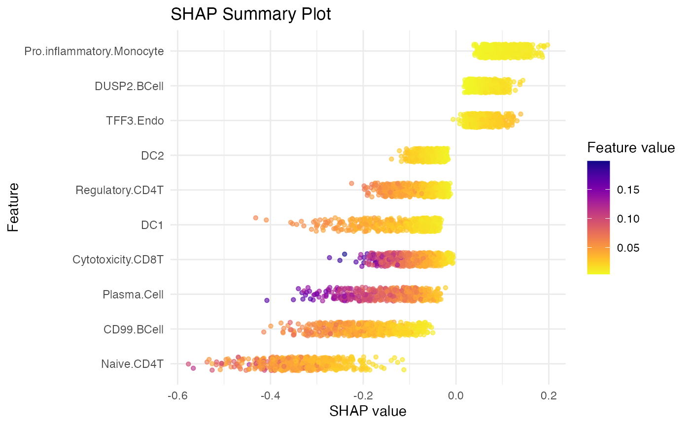
SHAP residual analysis
resi_result <- SpaPheno_SHAP_residual_analysis(
shap_df = shap_test,
feature_name = "Naive.CD4T",
coordinate_df = test_coordinate, size = 0.8
)
resi_result$dependence_plot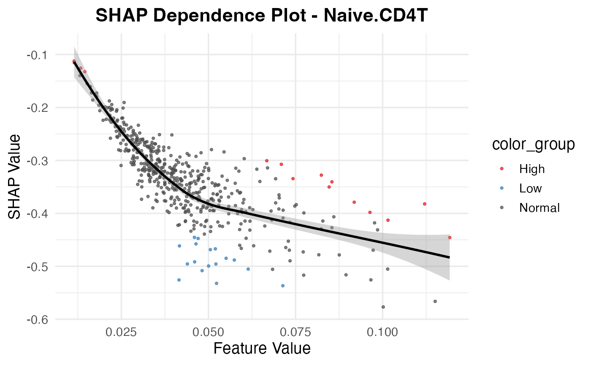
resi_result$spatial_plot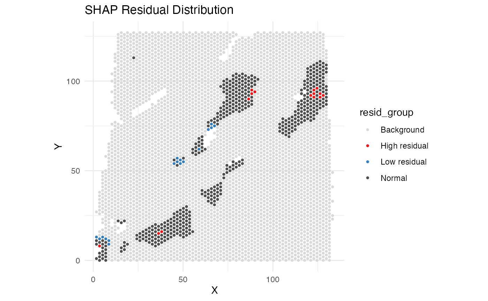
SHAP waterfall plot
resi_hot <- resi_result$residual_table
head(resi_hot[order(abs(resi_hot$phi_resid_z), decreasing = T), ], 10)## feature phi phi.var feature.value sample
## 30 Naive.CD4T -0.5257900 0.13837004 0.04155390 AATTCCAACTTGGTGA-1
## 51 Naive.CD4T -0.3821739 0.07231961 0.11206579 ACGACTCTAGGGCCGA-1
## 474 Naive.CD4T -0.5322684 0.17930920 0.05231648 TTATATACGCTGTCAC-1
## 420 Naive.CD4T -0.4955256 0.07926515 0.04394551 TCGCCTCGACCTGTTG-1
## 453 Naive.CD4T -0.5082004 0.09662787 0.04816872 TGGACTGTTCGCTCAA-1
## 181 Naive.CD4T -0.4916031 0.07350465 0.04604062 CGCATTAGCTAATAGG-1
## 331 Naive.CD4T -0.4994501 0.11421113 0.05003514 GTACTAAGATTTGGAG-1
## 136 Naive.CD4T -0.4456933 0.12689195 0.11926253 CAGGGCTAACGAAACC-1
## 419 Naive.CD4T -0.3278083 0.07309902 0.08241027 TCGCCTCCTTCGGCTC-1
## 379 Naive.CD4T -0.3405043 0.08242797 0.08543729 TAGCAGATACTTAGGG-1
## phi_residual phi_resid_z resid_group color_group
## 30 -0.1972143 -3.930519 Low residual Low
## 51 0.1790110 3.567723 High residual High
## 474 -0.1681884 -3.352028 Low residual Low
## 420 -0.1590603 -3.170102 Low residual Low
## 453 -0.1578033 -3.145050 Low residual Low
## 181 -0.1482263 -2.954179 Low residual Low
## 331 -0.1428959 -2.847942 Low residual Low
## 136 0.1392326 2.774932 High residual High
## 419 0.1355471 2.701479 High residual High
## 379 0.1328367 2.647461 High residual High
SpaPheno_SHAP_waterfall_plot(shap_test, "TCGCCGGAGAGTCTTA-1", top_n = 48)
SHAP dependence plot
TCell_subtypes <- unique(shap_test$feature)[str_detect(unique(shap_test$feature), "CD.T")]
BCell_subtypes <- unique(shap_test$feature)[str_detect(unique(shap_test$feature), "BCell")]
Monocyte_subtypes <- unique(shap_test$feature)[str_detect(unique(shap_test$feature), "Monocyte")]
Macrophage_subtypes <- unique(shap_test$feature)[str_detect(unique(shap_test$feature), "Macrophage")]
SpaPheno_SHAP_dependence_plot(shap_test, TCell_subtypes)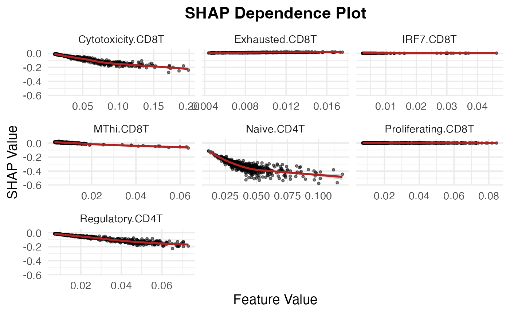
SpaPheno_SHAP_dependence_plot(shap_test, BCell_subtypes)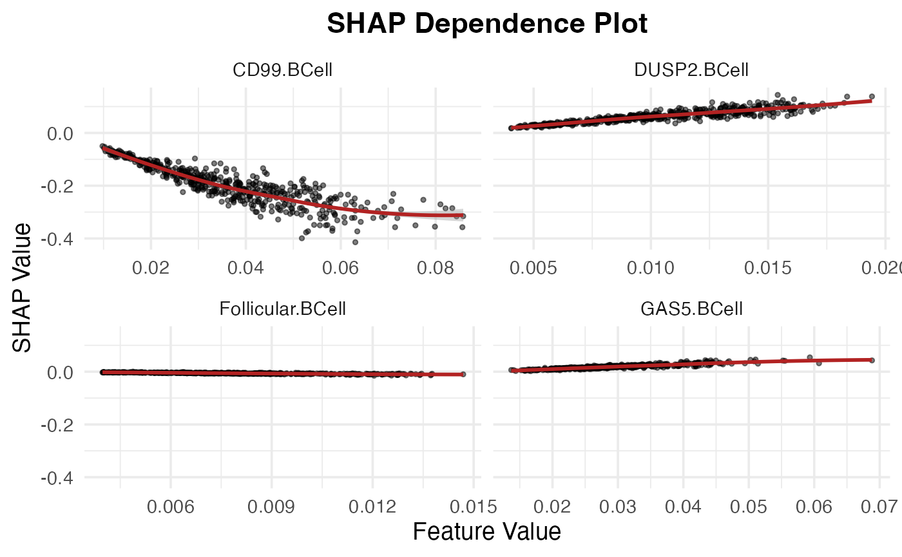
SpaPheno_SHAP_dependence_plot(shap_test, Monocyte_subtypes)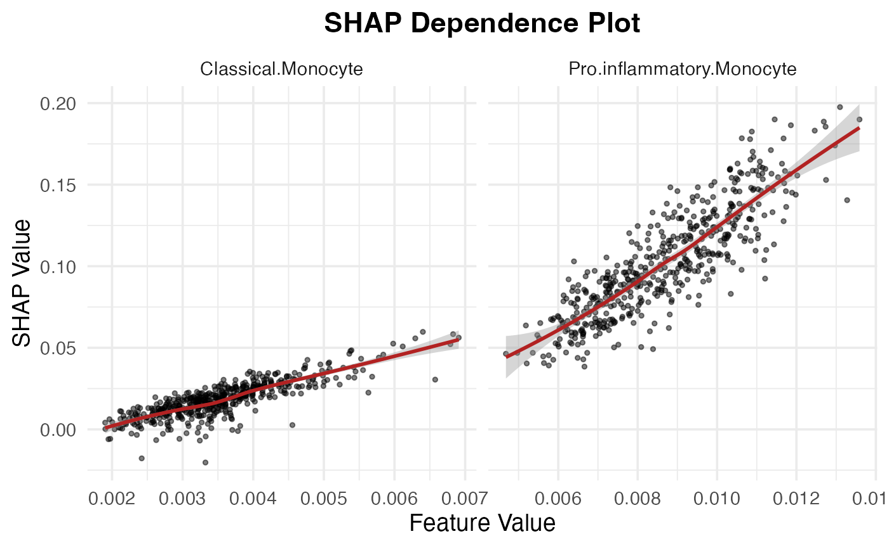
SpaPheno_SHAP_dependence_plot(shap_test, Macrophage_subtypes)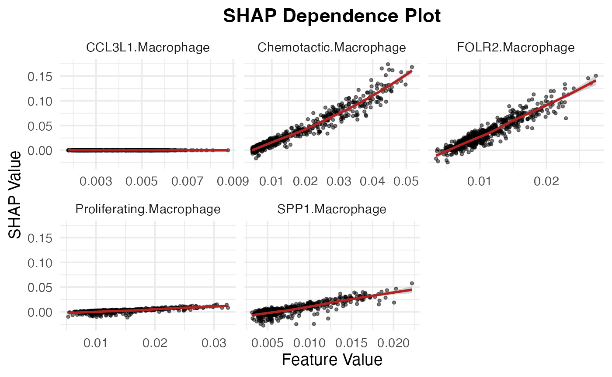
Survival BRCA
load demo data
### survival phenotype
TCGA_survival_each <- TCGA_BRCA$TCGA.BRCA.survival.tsv
Survival_TCGA_choose <- as.data.frame(TCGA_survival_each)
row.names(Survival_TCGA_choose) <- Survival_TCGA_choose[, 1]
### common samples between survival phenotype and deconvolution
sample_information_decon_TCGA_choose <- BRCA_decon[intersect(as.data.frame(TCGA_survival_each)[, 1], row.names(BRCA_decon)), ]
Survival_TCGA_choose <- Survival_TCGA_choose[row.names(sample_information_decon_TCGA_choose), ]
### survival object
surv_obj <- Surv(Survival_TCGA_choose$OS.time, Survival_TCGA_choose$OS)
### ST
test_coordinate <- as.data.frame(cbind(BRCA_ST$x, BRCA_ST$y))
colnames(test_coordinate) <- c("X", "Y")
sample_information_region <- BRCA_ST$label
bulk_decon <- sample_information_decon_TCGA_choose
bulk_pheno <- surv_obj
family <- "cox"
coord <- test_coordinate
resolution <- "spot"
colnames(bulk_decon) <- gsub("^[^_]*_[^_]*_[^_]*_sf_", "", colnames(bulk_decon))
colnames(sample_information_decon) <- gsub("^[^_]*_[^_]*_[^_]*_sf_", "", colnames(sample_information_decon))Ground truth
ggplot(test_coordinate, aes(x = X, y = Y, color = sample_information_region)) +
geom_point(size = 4)Obtain predicion results
PhenoResult <- SpatialPhenoMap(
bulk_decon = bulk_decon,
bulk_pheno = bulk_pheno,
family = "cox",
coord = test_coordinate,
resolution = "spot",
sample_information_decon = sample_information_decon,
size = 5,
n_perm = 1,
p = 0.001,
r = 2)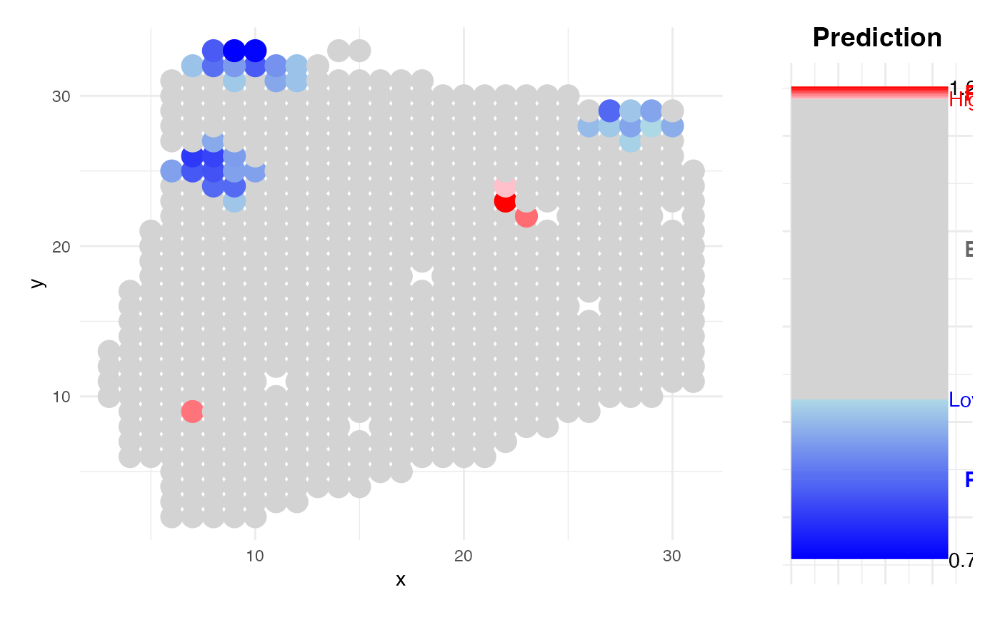
Survival KIRC
load demo data
### survival phenotype
TCGA_survival_each <- TCGA_KIRC$TCGA.KIRC.survival.tsv
Survival_TCGA_choose <- as.data.frame(TCGA_survival_each)
row.names(Survival_TCGA_choose) <- Survival_TCGA_choose[, 1]
### common samples between survival phenotype and deconvolution
sample_information_decon_TCGA_choose <- KIRC_decon[intersect(as.data.frame(TCGA_survival_each)[, 1], row.names(KIRC_decon)), ]
Survival_TCGA_choose <- Survival_TCGA_choose[row.names(sample_information_decon_TCGA_choose), ]
### survival object
surv_obj <- Surv(Survival_TCGA_choose$OS.time, Survival_TCGA_choose$OS)
test_coordinate <- as.data.frame(cbind(KIRC_ST$x, KIRC_ST$y))
colnames(test_coordinate) <- c("X", "Y")
sample_information_region <- KIRC_ST$TLSanno
bulk_decon <- sample_information_decon_TCGA_choose
bulk_pheno <- surv_obj
family <- "cox"
coord <- test_coordinate
resolution <- "spot"
colnames(bulk_decon) <- gsub("^[^_]*_[^_]*_[^_]*_sf_", "", colnames(bulk_decon))
colnames(sample_information_decon) <- gsub("^[^_]*_[^_]*_[^_]*_sf_", "", colnames(sample_information_decon))Ground Truth
ggplot(test_coordinate, aes(x = X, y = Y, color = sample_information_region)) +
geom_point(size = 2) +
scale_color_manual(
values = c(
"TLS" = "#007ACC",
"NO_TLS" = "lightgray"
),
name = "Region Type",
labels = c("NO_TLS", "TLS")
)Prediction result
PhenoResult <- SpatialPhenoMap(
bulk_decon = bulk_decon,
bulk_pheno = bulk_pheno,
family = family,
coord = test_coordinate,
resolution = "spot",
sample_information_decon = sample_information_decon,
size = 1.5,
n_perm = 1,
p = 0.005,
r = 2
)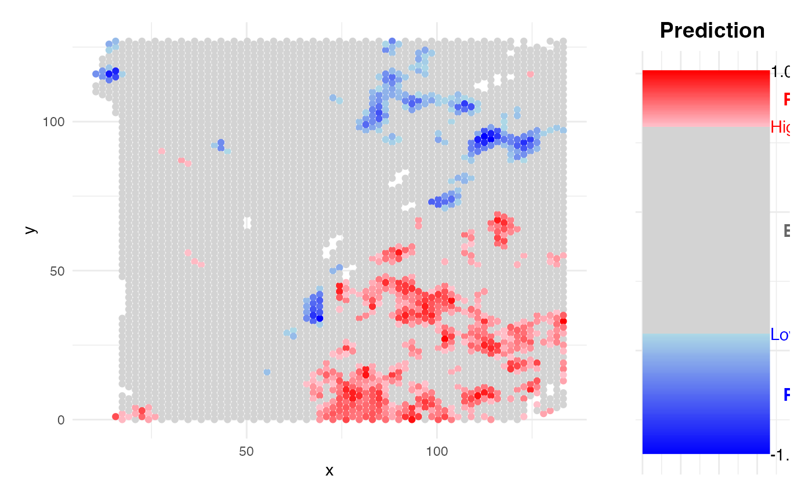
Hclust of low risk region
PhenotypeHclust(PhenoResult, "phenotype-", test_coordinate, size = 1.5)Stage HCC
load data
#### common samples between stage phenotype and deconvolution
common_sample <- intersect(names(sample_information_stage), row.names(LIHC_decon))
LIHC_decon <- LIHC_decon[common_sample, ]
sample_information_stage <- sample_information_stage[common_sample]
sample_information_region <- HCC_ST$TLSanno
test_coordinate <- HCC_ST@meta.data[, 4:5]
colnames(test_coordinate) <- c("X", "Y")
bulk_decon <- LIHC_decon
bulk_pheno <- sample_information_stage
family <- "gaussian"
coord <- test_coordinate
resolution <- "spot"
sample_information_decon <- sample_information_decon
colnames(bulk_decon) <- gsub("^[^_]*_[^_]*_[^_]*_sf_", "", colnames(bulk_decon))
colnames(sample_information_decon) <- gsub("^[^_]*_[^_]*_[^_]*_sf_", "", colnames(sample_information_decon))
### TLS label
ggplot(test_coordinate, aes(x = X, y = Y, color = sample_information_region)) +
geom_point(size = 1.5) +
scale_color_manual(
values = c(
"TLS" = "#007ACC",
"nonTLS" = "lightgray"
),
name = "Region Type",
labels = c("Non-TLS", "TLS")
)Obtain prdiction result
PhenoResult <- SpatialPhenoMap(
bulk_decon = bulk_decon,
bulk_pheno = bulk_pheno,
family = family,
coord = test_coordinate,
resolution = "spot",
sample_information_decon = sample_information_decon,
size = 1.5,
n_perm = 1,
p = 0.001
) 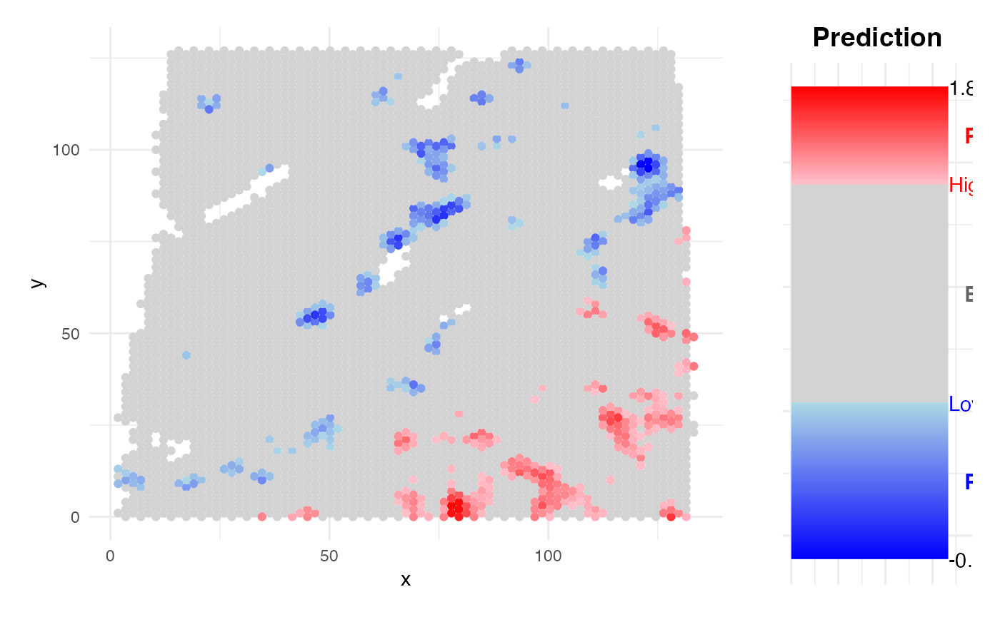
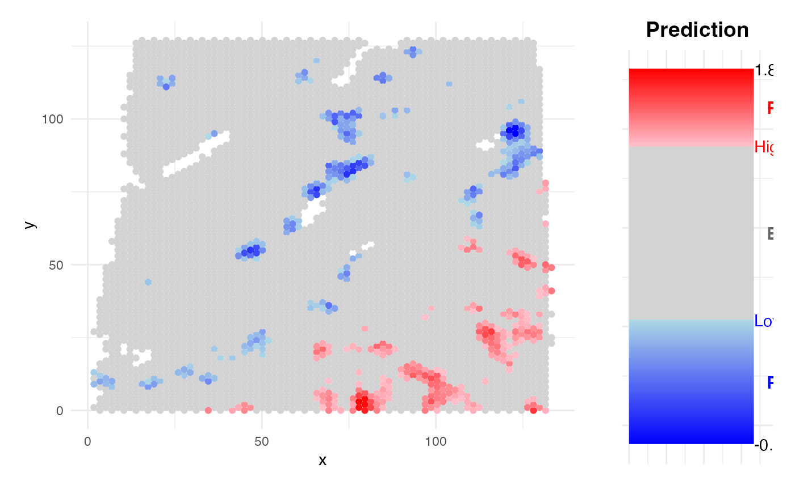
ICB melanoma
load data
test_coordinate <- head(Melanoma_ST, length(Melanoma_ST$x))[, 4:5]
colnames(test_coordinate) <- c("Y", "X")
test_coordinate <- test_coordinate[, c("X", "Y")]
bulk_decon <- bulk_decon
bulk_pheno <- bulk_pheno
family <- "binomial"
coord <- test_coordinate
resolution <- "spot"
sample_information_decon <- Melanoma_ST_decon
# sample_information_decon<-t(apply(sample_information_decon,1,function(x){x/sum(x)}))
colnames(bulk_decon) <- gsub("^[^_]*_[^_]*_[^_]*_sf_", "", colnames(bulk_decon))
colnames(sample_information_decon) <- gsub("^[^_]*_[^_]*_[^_]*_sf_", "", colnames(sample_information_decon))Obtain predicion results
PhenoResult <- SpatialPhenoMap(
bulk_decon = bulk_decon,
bulk_pheno = bulk_pheno,
family = family,
coord = test_coordinate,
resolution = "spot",
sample_information_decon = sample_information_decon,
size = 5,
n_perm = 1,
p = 0.01)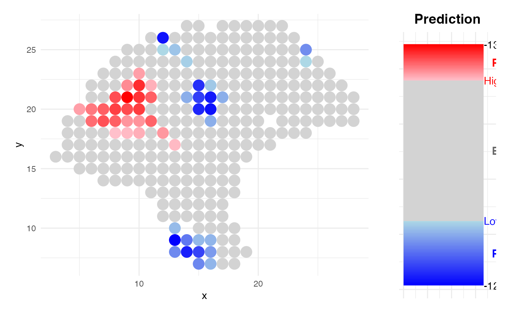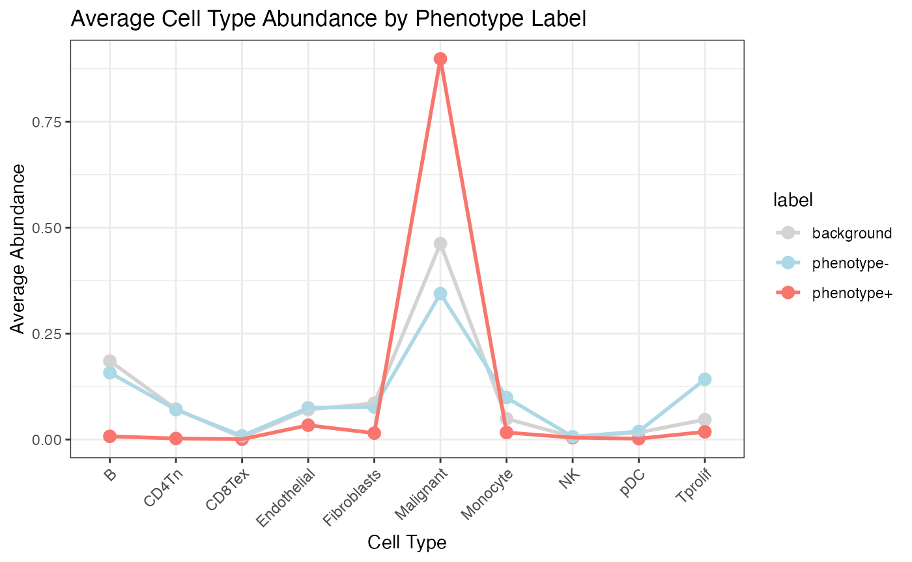
Summary
This tutorial provides a step-by-step demonstration of how to apply the SpaPheno R package to predict and interpret spatially informed phenotypes using spatial transcriptomic and bulk-like simulated data.
Across multiple datasets and biological contexts—including simulated osmFISH and STARmap, and real-world HCC, BRCA, and KIRC samples—this guide illustrates the core capabilities of SpaPheno:
- Phenotype Simulation: It shows how to simulate bulk-like phenotypic data from spatial single-cell annotations, capturing cell-type composition per region.
- Model Building: Using a logistic, linear, or Cox proportional hazards model with automated alpha selection, SpaPheno learns a predictive model from bulk deconvolution data and phenotypic labels.
- Spatial Prediction: The model is applied back to spatial neighborhoods (either at spot or single-cell resolution) to estimate and visualize spatial risk distributions.
- Permutation Testing: The tool quantifies the significance of spatial predictions using randomized coordinate-based permutation testing.
- SHAP-based Interpretation: By leveraging SHAP (SHapley Additive exPlanations), SpaPheno identifies the most important cell types contributing to spatial phenotype risk, at both population and single-cell levels.
- Residual & Dependence Analysis: SpaPheno offers residual maps and dependence plots to explore non-modeled effects and spatial patterns, enhancing interpretability.
In essence, SpaPheno bridges spatial cellular architecture and clinical or experimental phenotypes, enabling researchers to map spatial risk, decode key microenvironmental drivers, and explore the mechanistic underpinnings of tissue-level phenotypes.
This reproducible tutorial serves as a valuable resource for both method developers and biological researchers aiming to explore the spatial origins of complex phenotypes.
System information
## R version 4.4.3 (2025-02-28)
## Platform: aarch64-apple-darwin20
## Running under: macOS Sequoia 15.6
##
## Matrix products: default
## BLAS: /Library/Frameworks/R.framework/Versions/4.4-arm64/Resources/lib/libRblas.0.dylib
## LAPACK: /Library/Frameworks/R.framework/Versions/4.4-arm64/Resources/lib/libRlapack.dylib; LAPACK version 3.12.0
##
## locale:
## [1] en_US.UTF-8/en_US.UTF-8/en_US.UTF-8/C/en_US.UTF-8/en_US.UTF-8
##
## time zone: Asia/Shanghai
## tzcode source: internal
##
## attached base packages:
## [1] stats graphics grDevices utils datasets methods base
##
## other attached packages:
## [1] umap_0.2.10.0 fastcluster_1.2.6 philentropy_0.9.0
## [4] Seurat_5.3.0 SeuratObject_5.0.2 sp_2.2-0
## [7] survival_3.8-3 reshape2_1.4.4 lubridate_1.9.4
## [10] forcats_1.0.0 stringr_1.5.1 dplyr_1.1.4
## [13] purrr_1.0.4 readr_2.1.5 tidyr_1.3.1
## [16] tibble_3.3.0 ggplot2_3.5.2 tidyverse_2.0.0
## [19] SpaPheno_0.0.1 BiocManager_1.30.25 BiocStyle_2.34.0
##
## loaded via a namespace (and not attached):
## [1] RcppAnnoy_0.0.22 splines_4.4.3 later_1.4.1
## [4] polyclip_1.10-7 hardhat_1.4.1 pROC_1.18.5
## [7] rpart_4.1.24 fastDummies_1.7.5 lifecycle_1.0.4
## [10] globals_0.16.3 lattice_0.22-6 MASS_7.3-64
## [13] backports_1.5.0 magrittr_2.0.3 plotly_4.10.4
## [16] sass_0.4.9 rmarkdown_2.29 jquerylib_0.1.4
## [19] yaml_2.3.10 httpuv_1.6.15 sctransform_0.4.1
## [22] askpass_1.2.1 spam_2.11-1 spatstat.sparse_3.1-0
## [25] reticulate_1.42.0 cowplot_1.1.3 pbapply_1.7-2
## [28] RColorBrewer_1.1-3 abind_1.4-8 Rtsne_0.17
## [31] Metrics_0.1.4 nnet_7.3-20 ipred_0.9-15
## [34] lava_1.8.1 ggrepel_0.9.6 irlba_2.3.5.1
## [37] listenv_0.9.1 spatstat.utils_3.1-3 goftest_1.2-3
## [40] RSpectra_0.16-2 spatstat.random_3.3-3 fitdistrplus_1.2-2
## [43] parallelly_1.43.0 pkgdown_2.1.1 codetools_0.2-20
## [46] tidyselect_1.2.1 shape_1.4.6.1 farver_2.1.2
## [49] viridis_0.6.5 matrixStats_1.5.0 stats4_4.4.3
## [52] spatstat.explore_3.4-2 jsonlite_2.0.0 caret_7.0-1
## [55] progressr_0.15.1 ggridges_0.5.6 iterators_1.0.14
## [58] systemfonts_1.2.1 foreach_1.5.2 tools_4.4.3
## [61] ragg_1.3.3 ica_1.0-3 Rcpp_1.0.14
## [64] glue_1.8.0 prodlim_2024.06.25 gridExtra_2.3
## [67] xfun_0.51 mgcv_1.9-1 withr_3.0.2
## [70] fastmap_1.2.0 iml_0.11.4 openssl_2.3.2
## [73] digest_0.6.37 timechange_0.3.0 R6_2.6.1
## [76] mime_0.13 textshaping_1.0.0 colorspace_2.1-1
## [79] scattermore_1.2 tensor_1.5 spatstat.data_3.1-6
## [82] generics_0.1.3 data.table_1.17.0 recipes_1.2.0
## [85] FNN_1.1.4.1 class_7.3-23 httr_1.4.7
## [88] htmlwidgets_1.6.4 uwot_0.2.3 ModelMetrics_1.2.2.2
## [91] pkgconfig_2.0.3 gtable_0.3.6 timeDate_4041.110
## [94] lmtest_0.9-40 htmltools_0.5.8.1 dotCall64_1.2
## [97] bookdown_0.42 scales_1.3.0 png_0.1-8
## [100] gower_1.0.2 spatstat.univar_3.1-2 knitr_1.50
## [103] rstudioapi_0.17.1 tzdb_0.5.0 checkmate_2.3.2
## [106] nlme_3.1-167 cachem_1.1.0 zoo_1.8-13
## [109] SpaDo_1.2.0 KernSmooth_2.23-26 parallel_4.4.3
## [112] miniUI_0.1.1.1 desc_1.4.3 pillar_1.10.1
## [115] grid_4.4.3 vctrs_0.6.5 RANN_2.6.2
## [118] promises_1.3.2 xtable_1.8-4 cluster_2.1.8
## [121] evaluate_1.0.3 cli_3.6.4 compiler_4.4.3
## [124] rlang_1.1.6 future.apply_1.11.3 labeling_0.4.3
## [127] plyr_1.8.9 fs_1.6.5 stringi_1.8.4
## [130] deldir_2.0-4 viridisLite_0.4.2 munsell_0.5.1
## [133] lazyeval_0.2.2 spatstat.geom_3.3-6 glmnet_4.1-8
## [136] Matrix_1.7-2 RcppHNSW_0.6.0 hms_1.1.3
## [139] patchwork_1.3.0 future_1.34.0 shiny_1.10.0
## [142] ROCR_1.0-11 igraph_2.1.4 bslib_0.9.0